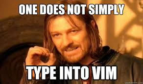

Getting started in Vim-Land
The (very) slow move to Vim

Over many years I’ve heard of the myth of the genius programmer (MotGP) who commands bits to move at his/her will using only Vim/Emacs(now, now don’t start a flame war) as the weapon of their choice. I used vim for the first time in college. I don’t remember the details but I was basically in an environment that did not support any graphical text editors. The two options I had were Vim and Nano. I decided to give things a shot with Vim but it went pretty terribly, I had no idea about how to use it and eventually skipped over to Nano, which I was familiar with.
Skip forward two years and the situation is slightly different. I can do meagre editing jobs on the terminal using vi. I’m aware of the very least, :i, :q, :wq, :q! and that’s when I was re-introduced to the MotGP and I was genuinely interested. This post will serve as a personal cheat-sheet, I’ll keep updating it as and when I learn more of vim-foo. The approach I’m taking is rather non-radical. I have not given up on Sublime Text, which is my TE of choice. For smaller/non-regular/non-mission-critical tasks such as writing this blog, I’m going to do it in Vim. Shortcuts that I’m gonna learn/add here will be those that I use regularly while editing text in Sublime.
Vim-foo
:wq = Write to file and quit Vim
:q = Save file and quit Vim [works only if you haven't edited the file]
:q! = Don't save changes and quit Vim
:help = Find Vim help
i = Insert mode
a = Append text after cursor
A = Append text at the end-of-line [think cmd+right arrow]
$ = Go to end of line [does not bring up insert mode]
gg = Go to beginning of file
G = Go to end of file
b = Go back one word at a time
w = Go forward one word at a time
vim.rc [so far]
set autoindent
set softtabstop=4
set expandtab
set shiftwidth=4
autoindent = copies indent from the previous line
softtabstop = amount of space a
expandtab = Fills space added by a
shiftwidth = number of spaces for indent, useful when using cindent